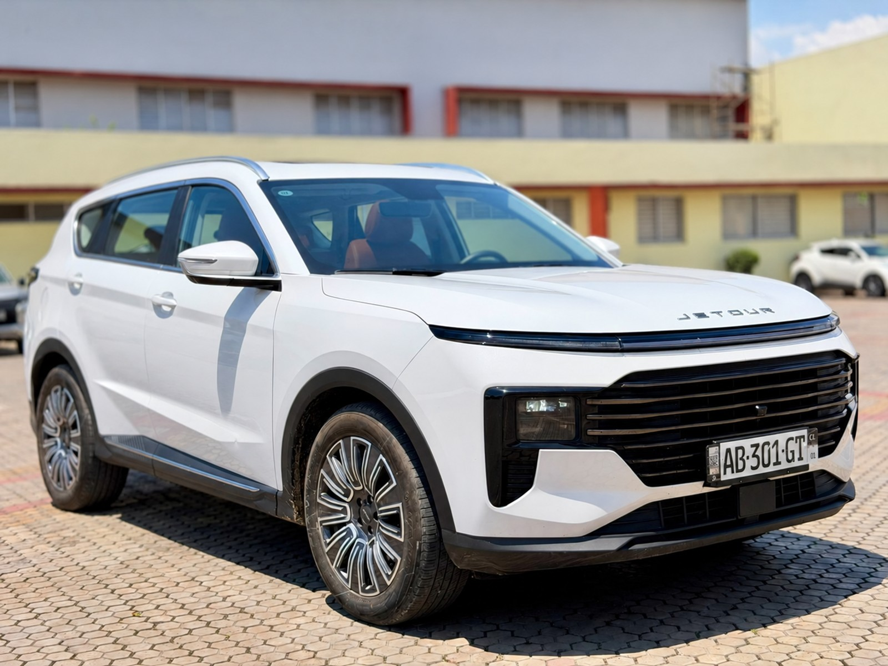

À vendre
Jetour X70 Plus 2026
2026 · Essence · Automatique · 9 000 km · 7 places
22 500 000 FCFA
Année2026
BoîteAutomatique
ÉnergieEssence
Cylindres4
Kilométrage9 000 km
Places7
SiègeÉlectrique
ToitPanoramique
DémarrageBouton start
Clés2
ÉquipementFull options
Jetour X70 Plus 2026, essence 4 cylindres et boîte automatique. 7 places, siège électrique, toit panoramique, démarrage par bouton, 2 clés et full options selon le vendeur.
Contactez TVB CI AUTO pour les informations, la position du véhicule et une visite.